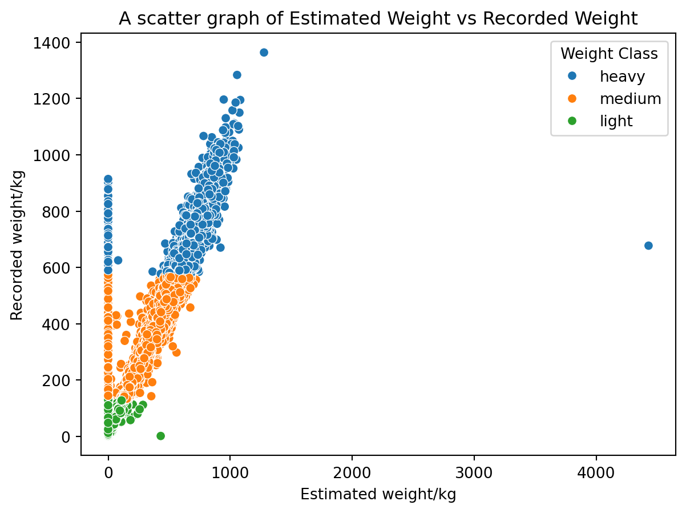

import pandas as pd
import math
import numpy as np
import matplotlib.pyplot as plt
from matplotlib import colormaps
import seaborn as sns
import csv Pumpkins Challenge Report
LIFE4138
Modules
For the script 6 modules where imported.
Aditional Code
output = open('output.txt', 'w')Creates a .txt file named output. This is for any text information which will be generated by the script to go to. ## Question 1 - Read in the Data Set
def import_csv(file):
"""
Imports a .csv file into a pandas data frame, to allow error handling
Args:
file (str) - name of file wanting to import
Output:
Returns file as object ready to assing
"""
try:
df = pd.read_csv(file)
return df
except pd.errors.EmptyDataError:
print("####ERROR import_csv: File is not a .csv. Cannot be read####")
print("#### Quitting program ####")
quit()
except FileNotFoundError:
print("####ERROR import_csv: File not found. Cannot be read####")
print("#### Quitting program ####")
quit() The .csv file is read into the script and assigned to the object pumpkins. the pandas function read_csv() is used. df is a data frame which is returned and assigned to pumpkin in the main body.
pumpkin = import_csv("pumpkins_08.csv")Error Handlng
pd.errors.EmptyDataError
- If the file being tried to read is not a .csv the program will end
FileNotFoundError
- If the file does not exist the program will end
Question 2 - Identifying the Heaviest Pumpkin
try:
heaviest = pumpkin.loc[pumpkin['weight_lbs'].idxmax()] # Returns row of heaviest pumpkin
output.write(f"The heaviest pumkin was in {str(heaviest['id'])[:4]}. Variety: {heaviest['variety']}, Location: {heaviest['city']}, {heaviest['country']}.\n\n")
# ^^^ Prints information. Takes first 4 characters of id for the year
except KeyError as e:
print("####ERROR main (find heaviest): a/multiple provided args do not exist.####")
print("#### Unable to get mean, Error message returned ####\n")
output.write("####ERROR main (find heaviest): a/multiple provided args do not exist.####")
output.write("#### Unable to get mean, Error message returned ####\n\n")
except AttributeError as e:
print("####ERROR main: (find heaviest) Trying to locate in a none df object####\n")
output.write("####ERROR main (find heaviest): Trying to locate in a none df object####\n")pumpkin['weight_lbs'].idxmax()returns the entire row for the highest value within the column weight_lbs. Using idxmax() will return the row id for the heaviest pumpkin, as apposed to the value itself.
pumpkin.loc[] takes the row id found by idxmax() and returns the entire row from within pumpkin. This row is assigned to heaviest. Assigning the row to an object allows for less cumbersome outputting of the data. It allows for each part of the row to be extract from the object as opposed to from the data set each time.
The output is the written to an output.txt file (see Additional Code).
The year was extracted from the id column. This was formatted as ‘YYYY-XX’ where YYYY was the year and XX was a number. The first 4 characters were taken to show the year. All other values were returned as found.
Outputs:
- Writes information about heaviest pumpokin to
output.txt
Error Handling
KeyError
- If a key does not exist, an error message is printed to the terminal and written to
output,txt
AttributeError
- If the object being read is not a data frame, an error message is printed to the terminal and written to
output,txt
Question 3 - Converting lbs to kg
def lbs_to_kg(data, col, new_col = 'new_column'):
"""
Converts weights in a column which are in lbs into kg
Args:
data - Dataset to look in
col - Column wanting to convert
new_col - name of new column for conversion data to go
Output
Adds a new column with converted weights
"""
try:
data[new_col] = (data[col]*0.4536) #Creates weights_kg column, converst lbs to kg and adds it in
return data #Returns data with new_col
except KeyError as e:
print(f"####ERROR lbs_to_kg: a/multiple provided args do not exist####")
print(f"####Args: {e.args}####\n")
return None
except TypeError:
print("####ERROR lbs_to_kg: col does not contain int/float####")
print("#### new_col not created ####\n")
return Nonelbs_to_kg converts values within a column whihc are in pounds into kilograms. It adds them to a new column within the data frame.
Inputs:
data(data frame) - The dataset where the a the conversion is neededcol(str) - Name of the column wanted to be convertednew_col(str) - Name of the column you want converted values to be put into
The col is multiplied by 0.4564. The values were assigned to new_col within data. data is returned out of the function with the new data in new_col.
Outputs: * A new column with converted values
In the script the function was used as below:
lbs_to_kg(pumpkin, 'weight_lbs', 'weight_kg')| id | place | weight_lbs | grower_name | city | state_prov | country | gpc_site | seed_mother | pollinator_father | ott | est_weight | pct_chart | variety | dataset_id | weight_kg | |
|---|---|---|---|---|---|---|---|---|---|---|---|---|---|---|---|---|
| 0 | 2020-P | 190 | 1384.337743 | Wolf, Andy | St. Cloud | Wisconsin | United States | River Prairie Ginormous Pumpkin Festival | 1810 Werner | Self | 407.180747 | 1525.599393 | 0.000000 | Cinderella | 8 | 627.935600 |
| 1 | 2019-P | 324 | 1290.420633 | Norario, Joe and Vicki | Armada | Michigan | United States | Michigan State Fair Weigh-off | 1901 Larsen | 1911 Urena | 394.118204 | 1198.929991 | 4.223032 | Big Max | 8 | 585.334799 |
| 2 | 2013-P | EXH | 538.759085 | Caspers, Rusty | Nibley | Utah | United States | Thanksgiving Point | 1278 Ceja | 1480 Urena | 0.000000 | 0.000000 | 0.000000 | Champion | 8 | 244.381121 |
| 3 | 2018-P | 1114 | 572.755395 | Faust, Del and Julie | Austin | Minnesota | United States | Gale Woods Farm Weigh-off | 1109 Borgers 16 | Open | 297.897641 | 592.297960 | 0.000000 | Blue Hubbard | 8 | 259.801847 |
| 4 | 2015-P | 261 | 1456.472833 | Boehi, Sarah & Emma | Mertztown | Pennsylvania | United States | Oakland Nursery Weigh-off | 2008 NEPTUNE | SELF | 446.768414 | 1461.806809 | 0.000000 | Casper | 8 | 660.656077 |
| ... | ... | ... | ... | ... | ... | ... | ... | ... | ... | ... | ... | ... | ... | ... | ... | ... |
| 15951 | 2021-P | 1087 | 319.310163 | Olejniczak, Tomasz | Domoslawek | Lesser Poland | Poland | Bania Fest - Festiwal Dyni w Sercu Opolszczyzny | self | self | 0.000000 | 0.000000 | 0.000000 | Cinderella | 8 | 144.839090 |
| 15952 | 2019-P | 936 | 541.351396 | Buechele, Franz | Ernstbrunn | Lower Austria | Austria | Leiserberge Weigh-off | NaN | NaN | 0.000000 | 0.000000 | 0.000000 | Wolf | 8 | 245.556993 |
| 15953 | 2015-P | 937 | 699.029666 | Fliehr, Randy | Barnesville | Ohio | United States | Operation Pumpkin | 1870 Lieber | open | 323.570677 | 771.031477 | 2.013302 | Blue Hubbard | 8 | 317.079856 |
| 15954 | 2019-P | 883 | 612.518275 | Edwards, Ron | Deer Park | Wisconsin | United States | Mishicot Pumpkin Fest | 2,004 Vanderwielen | open | 303.342895 | 651.427988 | 0.000000 | Rouge Vif d’Etampes | 8 | 277.838290 |
| 15955 | 2018-P | 1444 | 282.419958 | Sippel, Cole | Bloomfield | Iowa | United States | Bloomfield Giant Pumpkin Bash | NaN | NaN | 221.984950 | 242.743782 | 9.270972 | Blue Hubbard | 8 | 128.105693 |
15956 rows × 16 columns
A new column named ‘weight_kg’ was created containing converted values from weight_lbs from within pumpkin.
Error Handling
KeyError
- If an arg passed in does not exist
Noneis returned
TypeError
- If
coldoes not contain an int or float,Noneis returned
Question 4 - Creating Weight Classes
def classify(data, col, new_col, classes = [0, 1, 2]):
"""
Adds a new column with classes for a chosen column
Args:
data - Dataset to look in
col - Column wanting to classify
new_col - name of new column to add classes in
classes - Classes wanted to be assigned in new_col. Must be length of 3
Output
Adds a new column to data with classes. Returns the new dataset
"""
try:
mean = data[col].mean() #Calculates mean of weights in kg
sd = data[col].std() #Calculates standard deviation of weights in kg
data[new_col] = '' #Creates new column
for i in range(len(data[col])): #Loops through the weight_kg column
if data[col][i] < (mean - sd): #Selects rows with weight = mean-sd
data.iloc[i, data.columns.get_loc(new_col)] = classes[0] #Adds first value class to new_col
elif data[col][i] > (mean + sd): #Selects rows with weight = mean+sd
data.iloc[i, data.columns.get_loc(new_col)] = classes[2] #Adds 3rd value of class to new_col
elif math.isnan(data[col][i]) == True:
data.iloc[i, data.columns.get_loc(new_col)] = np.nan
else:
data.iloc[i, data.columns.get_loc(new_col)] = classes[1] #Else, rest get 2nd value of class added to weight_class column
return data
except TypeError:
print("####ERROR classify: col is not int/float####")
print("#### data returned unchanged ####\n")
return data
except KeyError as e:
print("####ERROR classify: a/multiple provided args do not exist####")
print("#### data returned unchanged ####")
print(f"####Args: {e.args}####\n")
return data
except AttributeError:
print("####ERROR classify: Cannot pull from data as not a data frame####")
print("#### Returned None ####\n")
return NoneThe function classify() was created to allow the addition of any classes to the data set as needed. The function assigns a high class as o1 or more standard deviations above the mean, and the low class as 1 or more standard deviations below the mean. The middle class is with that range.
Inputs:
data(dataframe) - The dataset which you want the function to run oncol(str) - The column within data which you want the classification bassed onnew_col(str) - The name of the new column you want the classed adding intoclasses(list) - A list of 3 strings, which you want the classes to be named. Value 0 is the lower class, 1 is the middle class and 2 is the upper class
The mean and standard deviation of col was calculated with the mean() and std() functions from within numpy. A blank new column is created. A for loop with the length of col allows for iteration for each value in the list. This assigns each value individually so it can be slow on large data sets.
if and elif functions are used to check if the current value is below, or above 1 standard deviation from the mean. else is used to assign values within that range.
iloc is used to provide the location with data for the class to be assigned. It gets assiged to row i. The column is found through data.columns.get_loc(new_col). This returns the numerical id for new_col so it can be assigned with iloc
Class names get pulled from the list. classes.
Outputs:
data[new_col]- A new column withindata, which contains the classes provided in the function
Within the script the function was ran as below.
classify(pumpkin, 'weight_kg', 'weight_class', ['light', 'medium', 'heavy'])| id | place | weight_lbs | grower_name | city | state_prov | country | gpc_site | seed_mother | pollinator_father | ott | est_weight | pct_chart | variety | dataset_id | weight_kg | weight_class | |
|---|---|---|---|---|---|---|---|---|---|---|---|---|---|---|---|---|---|
| 0 | 2020-P | 190 | 1384.337743 | Wolf, Andy | St. Cloud | Wisconsin | United States | River Prairie Ginormous Pumpkin Festival | 1810 Werner | Self | 407.180747 | 1525.599393 | 0.000000 | Cinderella | 8 | 627.935600 | heavy |
| 1 | 2019-P | 324 | 1290.420633 | Norario, Joe and Vicki | Armada | Michigan | United States | Michigan State Fair Weigh-off | 1901 Larsen | 1911 Urena | 394.118204 | 1198.929991 | 4.223032 | Big Max | 8 | 585.334799 | heavy |
| 2 | 2013-P | EXH | 538.759085 | Caspers, Rusty | Nibley | Utah | United States | Thanksgiving Point | 1278 Ceja | 1480 Urena | 0.000000 | 0.000000 | 0.000000 | Champion | 8 | 244.381121 | medium |
| 3 | 2018-P | 1114 | 572.755395 | Faust, Del and Julie | Austin | Minnesota | United States | Gale Woods Farm Weigh-off | 1109 Borgers 16 | Open | 297.897641 | 592.297960 | 0.000000 | Blue Hubbard | 8 | 259.801847 | medium |
| 4 | 2015-P | 261 | 1456.472833 | Boehi, Sarah & Emma | Mertztown | Pennsylvania | United States | Oakland Nursery Weigh-off | 2008 NEPTUNE | SELF | 446.768414 | 1461.806809 | 0.000000 | Casper | 8 | 660.656077 | heavy |
| ... | ... | ... | ... | ... | ... | ... | ... | ... | ... | ... | ... | ... | ... | ... | ... | ... | ... |
| 15951 | 2021-P | 1087 | 319.310163 | Olejniczak, Tomasz | Domoslawek | Lesser Poland | Poland | Bania Fest - Festiwal Dyni w Sercu Opolszczyzny | self | self | 0.000000 | 0.000000 | 0.000000 | Cinderella | 8 | 144.839090 | medium |
| 15952 | 2019-P | 936 | 541.351396 | Buechele, Franz | Ernstbrunn | Lower Austria | Austria | Leiserberge Weigh-off | NaN | NaN | 0.000000 | 0.000000 | 0.000000 | Wolf | 8 | 245.556993 | medium |
| 15953 | 2015-P | 937 | 699.029666 | Fliehr, Randy | Barnesville | Ohio | United States | Operation Pumpkin | 1870 Lieber | open | 323.570677 | 771.031477 | 2.013302 | Blue Hubbard | 8 | 317.079856 | medium |
| 15954 | 2019-P | 883 | 612.518275 | Edwards, Ron | Deer Park | Wisconsin | United States | Mishicot Pumpkin Fest | 2,004 Vanderwielen | open | 303.342895 | 651.427988 | 0.000000 | Rouge Vif d’Etampes | 8 | 277.838290 | medium |
| 15955 | 2018-P | 1444 | 282.419958 | Sippel, Cole | Bloomfield | Iowa | United States | Bloomfield Giant Pumpkin Bash | NaN | NaN | 221.984950 | 242.743782 | 9.270972 | Blue Hubbard | 8 | 128.105693 | light |
15956 rows × 17 columns
Here pumpkin gets a new column added to it named ‘weight class’. It classifies each row as ‘light’, ‘medium’, or ‘heavy’ based on the column weight_kg. Classes were made according to standard distributions, as when plotted in question 5, it can better show the drstribution of the data.
Error Handling
TypeError
- If
coldoes not contain an int or float,datais returned unchanged
KeyError
- If a arg passed into
classify()does not exist, `data is returned unchanged
AttributeError
- If
datais not a data frame,Noneis returned
Question 5 - Plotting Estimated and Actual Weights
lbs_to_kg(pumpkin, 'est_weight', 'est_weight_kg') #Creates new column with converted weights named 'est_weight_kg'
try:
pumpkin['est_weight'] = pumpkin['est_weight'].replace({0:np.nan}) #Sets 0 values to NaN within 'estimated_weight'
except KeyError as e:
print("####ERROR main (remove 0): a/multiple provided args do not exist.####")
print("#### Unable to get mean, Error message returned ####")
print(f"####Args: {e.args}####\n")
except TypeError:
print("####ERROR main (remove 0): Trying to locate in a none df object####\n")
except AttributeError:
print("####ERROR main (remove 0): Trying to locate in a none df object####\n")
try:
fig1 = sns.scatterplot(
x='est_weight_kg', y='weight_kg', #Sets axis
hue='weight_class', #Colours by class
data=pumpkin) #Data is pumpkins dataset
plt.title('A scatter graph of Estimated Weight vs Recorded Weight') #Gives title
plt.xlabel('Estimated weight/kg') #Labels x-axis
plt.ylabel('Recorded weight/kg') #Labels y-axis
plt.legend(title='Weight Class') #Gives title to legend
plt.savefig('Figure_1.png') #Saves plot to png
except Exception as e:
print(f"####ERROR Fig1: Trying to plot none correct data####")
print(f"####{e.args}####\n")
For the plot I chose to remove all zero values from est_weight. This is as the values are likely to be missing data points, and as such appear as zero in the data set. It is likely that not every grower in the competitions were able to get estimated weight data. I interogated this by using filter_col() (see question 6), as below, to select only pumpkins with zero estimated weights.
filter_col(pumpkin, 'est_weight', [0], 'pumpkin_0_est')Here many pumpkins also lack data for ott, pct_chart, polinator_mother, and pollinator_farther. This suggests that the zero values come from a lack of data, as opposed an actual estimated weight of 0.
In order to plot the graph in kg, the est_weight was put through lbs_to_kg() to create a column containing the estimated weights of the pumpkins in kg. It was ploted as a seaborn scatterplot using sns.scatterplot. All other attributes were assigned through pyplot.
The graph identified that most pumpkins’ actual weights were clost to their estimated wheights. However there was a notable outlier with a estimated weight of 4430 kg, with an actual weight of 678 kg. It is possible that there is order-of-magnitude error, as an estimated weight of 443 kg fits more closely with the rest of the data.
Question 6 - Filtering Data
def filter_col(data, col, filt = [], file_name='filter_output'):
"""
Creates filtered .csv file for pumpkins for chosen filters
Args:
data (data frame)- Dataset to look in
col (str) - Column to filter by
filt (list) - Selected items to filter for
file_name (str) - Chosen name for file to be outputed. Does not require .csv extention
Output:
.csv - Contains only pumpkin data from chosen countries
"""
data_filtered = pd.DataFrame(columns=list(data.columns.values)) #Creates blank data frame with same
for i in range(len(filt)): #For loop iterates through all items in filt.
data_filtered = data_filtered._append(data[data[col] == filt[i]]) #Adds all rows contain item i in filt into the blank data frame
data_filtered.to_csv(file_name+'.csv', sep=',', index=False, header=True) #Exports the data frame as a .csv file
return data_filteredfilter_col() produces a new .csv file, containing only rows, filtered by specified values.
Inputs:
data(data frame) - data frame that wants to be filteredcol(str) - Name of the column which is filtered byfilt(list) - Contains the values you want to filter for (keep)file_name(str) - Chosen name of the exported .csv file. Does not require the .csv extension
A blank data frame (data_filtered) is created with the headings of data.
A for loop the length of the provided filters is used to go through the data set individually for each filter.
_append adds all rows from data where the value in col is equal to filter number i. The next iteration of the for loop will check for the next filter.
The new data frame data_filtered is written to a .csv file with the name provided. It is also returned out of the function and assigned to pumpkin_filtered.
In the script filter_col() was ran as below.
pumpkin_filtered = filter_col(pumpkin, 'country', ['Spain', 'Japan', 'France'], 'pumpkins_filtered')/var/folders/f2/fvn16q9n3l94cbnz6v72b0tm0000gn/T/ipykernel_42904/481312491.py:18: FutureWarning: The behavior of DataFrame concatenation with empty or all-NA entries is deprecated. In a future version, this will no longer exclude empty or all-NA columns when determining the result dtypes. To retain the old behavior, exclude the relevant entries before the concat operation.
data_filtered = data_filtered._append(data[data[col] == filt[i]]) #Adds all rows contain item i in filt into the blank data frameQuestion 7 - Summarise by Country and Variety
def summary_mean(data, col, groups):
"""
Summarises data by selected groupings and operation. If more than one item is put into groups it will out put a combined summary
Args:
data (data frame) - Data set to summarise
col (str) - Column in data to summarise
group (list) - Columns to summarise by. First vaule is the main column, gives individual sumary.
Output:
Table with data for country and variety
"""
summ1 = str(data.groupby(groups[0])[col].mean()) #Sets summary as string object for return
if len(groups) > 1: #Checks if more than one value is in groups. If yes, provides the multiple summary
summ2 = str(data.groupby(groups)[col].mean()) #Sets multiple summary as string object for return
return f"{summ1}\n\n{summ2}" #returns multiple summary
else:
return summ1 #Returns single summary id only one value chosensummary_mean() will provide mean and grouped mean of a column of choice, and it will group it by specified groups. The first column will give an individual summary for that column. And other columns will provide a combined summary.
Inputs:
data(data frame) - Data set to summarisecol(str) - Column in data to summarisegroup(list) - Columns to summarise by. First vaule is the main column, gives individual summary.
The mean data, grouped by the first column in groups, is assigned to summ1 as a string. The function checks if there are more than one column to summarise by. If yes it will assigned the combined summary to summ2 as a string. summ1 and summ2 are returned in a concatenated formatted with a blank line between them. If there is only 1 column in groups it returns summ1.
The output of summary_mean() will is assined to the object summary_out. It is then written to output.txt.
summary_out = summary_mean(pumpkin_filtered, 'weight_kg', ['country'])
output.writelines(summary_out)Question 8 - Plotting the Filtered Data
fig2 = pumpkin_filtered.boxplot(column='weight_kg', by='country', grid=False) #Generates boxplot without a grid
plt.title('A Boxplot of 3 countries and the Weights of Pumpkins') #Gives title
plt.ylabel('Country') #Labels x axis
plt.xlabel('Weight/kg') #Labels y axis
plt.savefig('Figure_2.png') #Saves as png
plt.close()A boxplot for the 3 countries is created using pyplot from matplotlib. It graphs the data from weight_kg, and groups it by country. It uses data from pumpkin_filtered, so only countries selected in filter_col are included.
The plot is titled and labelled as above. It is saved to a .png titled “Figure_2”.
Question 9 - Faceted Box Plot of the Filtered Data
fig3 = sns.FacetGrid(pumpkin_filtered, #Data taken from pumkin_filtered and produces facet grid
col='country', #Facets the data by country
hue='variety', #Colours boxplots by pumpkin variety
height=3.5, aspect=1, #Sets size of the axis
col_wrap=2, #2 axis per row
palette='tab20') #Sets colour for hue
fig3.map_dataframe(sns.boxplot, 'variety', 'weight_kg') #Creates the boxplots using seaborn
fig3.fig.suptitle('Boxplots of Variety Against Weights, Grouped by Country') #Gives title
plt.subplots_adjust(top=0.9) #Gives title space
fig3.set_titles(col_template='{col_name}', row_template='{row_name}') #Labels facet grid row and column
fig3.set_axis_labels('Variety', 'Weight/kg') #Labels axis
plt.legend(loc='center left', bbox_to_anchor=(1.37, 0.45), #Creates legend and ajusts position
fontsize = 'small') #Changes legend size to fit
plt.gca().set_xticklabels([]) #Removes labels on x axis to reduce clutter
plt.savefig('Figure_3.png') #Saves as png
plt.close() #Closes plotSeaborn was used to created the faceted plot of the countries by variety.
A facet grid for the countries was created by sns.facetgrid(). The data is taken from pumpkin_filtered and the facets are split by country. Hue is set as variety to colour each box on the plot. col_wrap was set as 2 to arrange the plots well with the legend. The colour palette for hue was selected as tab20 due to the number of varieties requiring several colours.